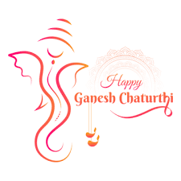

Ganesh Chaturthi (guh-NESH cha-TUR-thee) is a festival that pays homage to Lord Ganesh, the remover of obstacles,
and celebrates the day of his birth
Many recognize that Lord Ganesh brings order in this universe and worship him before embarking on a new endeavor,
intellectual journey,
or business enterprise.
Therefore, it is common to see images or statues of him in these places.